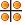

|
|
Main Window — View Toolbar |
Perform actions on the Workspace view.
 |
Fit Menu equivalent: View → Fit to Workspace → Selected Atoms. Keyboard shortcut: Z Fit the selected atoms (or all atoms, if there is no selection) to the Workspace. See Fit to Workspace for more information. |
| Fog This button has a menu from which you can choose Automatic, On, or Off. Automatic fogging turns fogging on when the molecule has more than 40 atoms. |
|
 |
Enhance Menu equivalent: View → Fog → Enhance Depth Cues. Enhance depth cues. See Enhance Depth Cues for more information. |
 |
Rotate X Menu equivalent: View → Rotate → X 90. Rotate the Workspace around the X axis by 90 degrees. |
| Rotate Y Menu equivalent: View → Rotate → Y 90. Rotate the Workspace around the Y axis by 90 degrees. |
|
|  | Tile Arrange the Workspace entries in a rectangular grid of "tiles". See Tiling Entries for more information. |
 |
Reset Menu equivalent: View → Reset. Resets the rotation, translation, and zoom of the Workspace to the default state. |
|